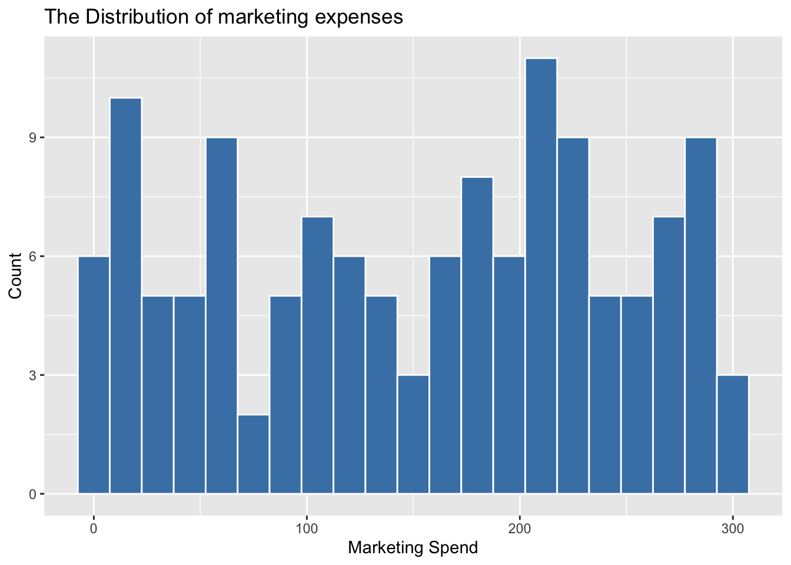
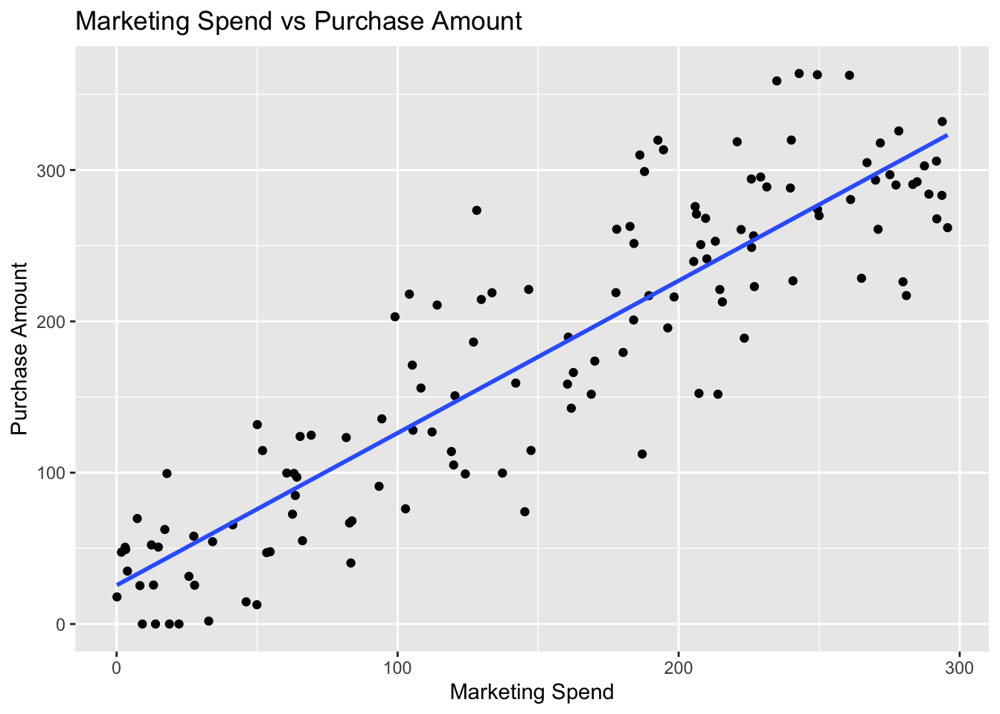
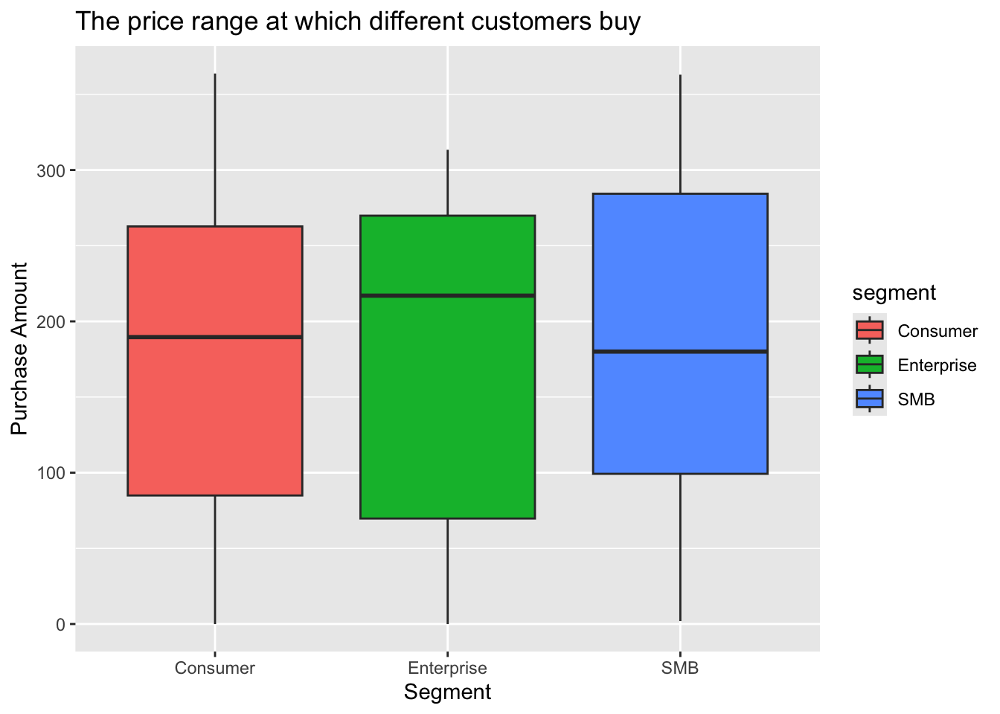

Call:
lm(formula = purchase_amount ~ marketing_spend, data = record_clean)
Residuals:
Min 1Q Median 3Q Max
-101.504 -32.251 -3.844 29.725 118.799
Coefficients:
Estimate Std. Error t value Pr(>|t|)
(Intercept) 25.5996 7.8411 3.265 0.0014 **
marketing_spend 1.0063 0.0443 22.718 <2e-16 ***
---
Signif. codes: 0 '***' 0.001 '**' 0.01 '*' 0.05 '.' 0.1 ' ' 1
Residual standard error: 46.38 on 130 degrees of freedom
Multiple R-squared: 0.7988, Adjusted R-squared: 0.7972
F-statistic: 516.1 on 1 and 130 DF, p-value: < 2.2e-16ETC5513_Assignment1
Introduction section
As a Head of Marketing for an online retailer, understanding the relationship between marketing investment and return is critical for our company. Over the last quarter, a new personalised marketing campaign had been used to know how much marketing inventment contacting individual customers. The purpose of this report is to provide data support for the company’s future decisions.
Research Question section
In this assignment, I will focus on the relationship between “marketing_spend” and “purchase_amount” which can help me to answer the question: did higher marketing spend per customer lead to higher purchase amounts? And then, I will focus on the differences between different kinds of customers, and get the conclusion of whether different types of customers have different prices?
Dataset Introduction section
The data set records the number of visits to the product and the amount of consumption by different kinds of customers under different marketing investments.In the data cleaning process, the null values in “purchase_amount” are filtered out first, because these NA values will affect the subsequent linear regression. And then purchase_amountAnd marketing_spend linear regression to draw conclusions after the summary.
Dataset Description subsection
The cleaned dataset include 132 observations and 7 variables. The variables include the customer_id(character), signup_date(character), marketing_spend(double), visits(integer), purchase_amount(double), segment(character), notes(character)
By using the summary function, a conclusion can be drawn.Firstly, there is a significant positive relationship between marketing spend and purchase amount. Secondly, every 1 unit increase in marketing spend leads to a 1.006 unit increase in purchase amount — almost a 1-to-1 return on investment. And then the R squar = 0.80 means marketing spend explains 80% of the variation in purchase amount which can be seen a very strong explanation for this dataset.In the end, the p-value far below 0.001 which means this result is not due to chance.
The marketing expenditure ranges from 0 to 300, with a relatively even distribution. This indicates that the marketing campaign has covered a very comprehensive area, which is conducive to a more effective analysis of the relationship between subsequent marketing expenses and revenue.

Results section
There is a clear positive linear correlation between marketing investment and purchase amount. The regression line fits the data very well, matching a high R squar value. This indicates that higher marketing investment will continue to bring about higher purchase volumes.

The median purchase amount for all three customer groups is very closed, ranging from approximately 190 to 220. However, there is the greatest variability in the purchase amount of enterprise, while the purchasing behavior of Consumers is the most stable. This indicates that although the overall positive correlation between marketing expenditure and purchase amount holds true for all groups, this influence may be more difficult to predict for enterprises.
